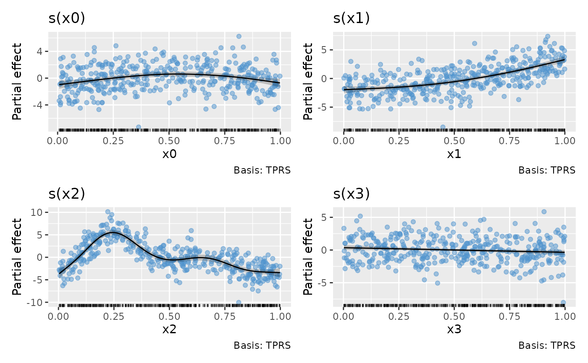
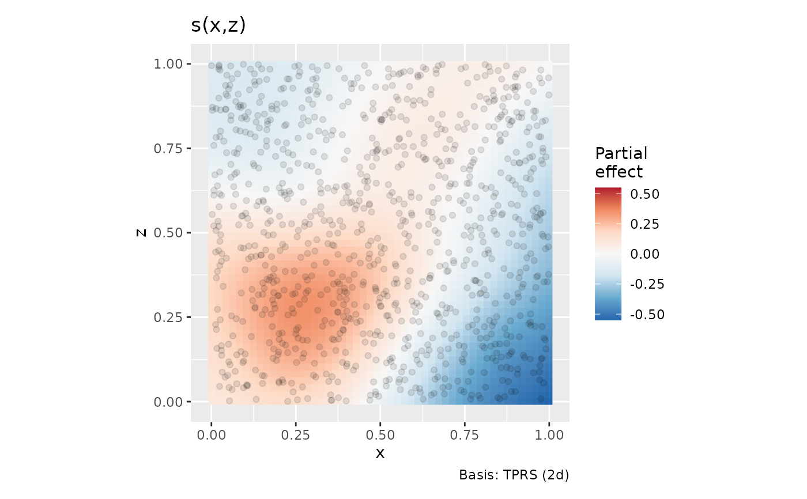
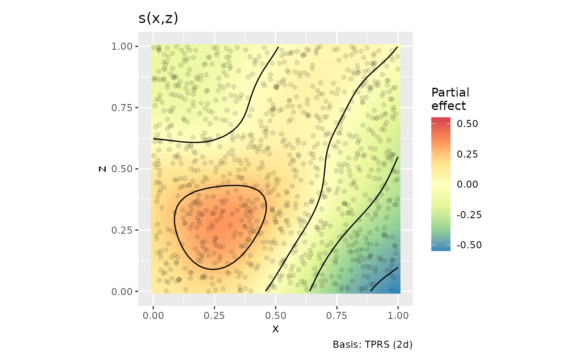
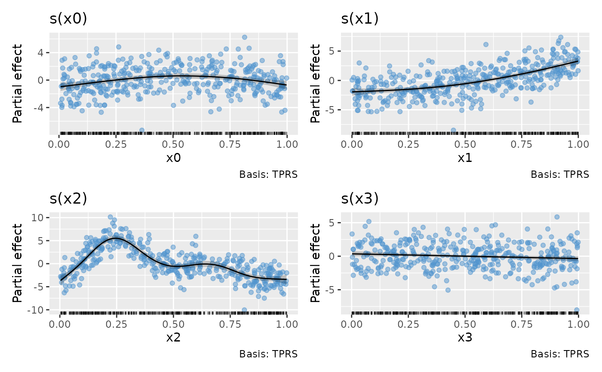
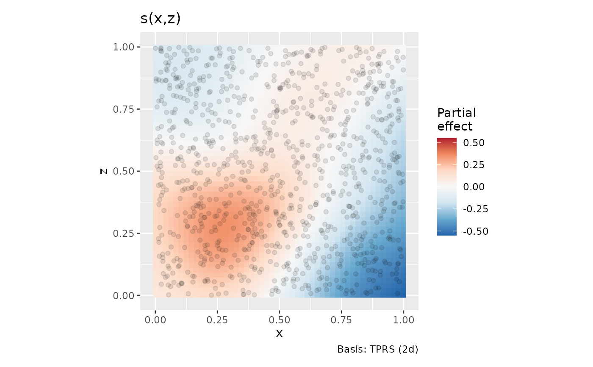
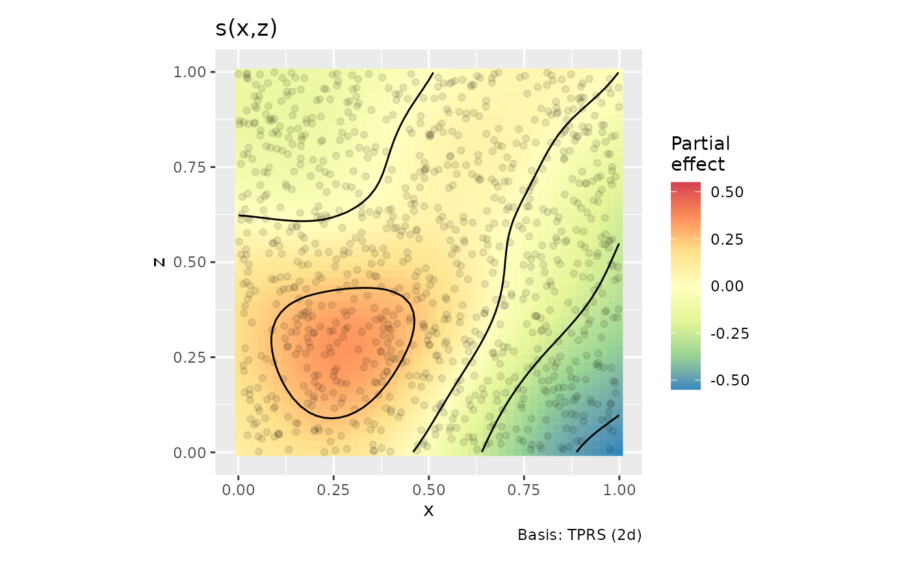

Plots estimated smooths from a fitted GAM model in a similar way to
mgcv::plot.gam() but instead of using base graphics, ggplot2::ggplot()
is used instead.
# S3 method for gam
draw(
object,
data = NULL,
parametric = NULL,
select = NULL,
residuals = FALSE,
scales = c("free", "fixed"),
ci_level = 0.95,
n = 100,
unconditional = FALSE,
overall_uncertainty = TRUE,
constant = NULL,
fun = NULL,
dist = 0.1,
rug = TRUE,
contour = TRUE,
contour_col = "black",
n_contour = NULL,
partial_match = FALSE,
discrete_colour = NULL,
continuous_colour = NULL,
continuous_fill = NULL,
ncol = NULL,
nrow = NULL,
guides = "keep",
...
)Arguments
| object | a fitted GAM, the result of a call to |
|---|---|
| data | a optional data frame that may or may not be used? FIXME! |
| parametric | logical; plot parametric terms also? Default is |
| select | character, logical, or numeric; which smooths to plot. If
|
| residuals | logical; should partial residuals for a smooth be drawn? Ignored for anything but a simple univariate smooth. |
| scales | character; should all univariate smooths be plotted with the
same y-axis scale? The default, |
| ci_level | numeric between 0 and 1; the coverage of credible interval. |
| n | numeric; the number of points over the range of the covariate at which to evaluate the smooth. |
| unconditional | logical; should confidence intervals include the
uncertainty due to smoothness selection? If |
| overall_uncertainty | logical; should the uncertainty in the model constant term be included in the standard error of the evaluate values of the smooth? |
| constant | numeric; a constant to add to the estimated values of the
smooth. |
| fun | function; a function that will be applied to the estimated values
and confidence interval before plotting. Can be a function or the name of a
function. Function |
| dist | numeric; if greater than 0, this is used to determine when
a location is too far from data to be plotted when plotting 2-D smooths.
The data are scaled into the unit square before deciding what to exclude,
and |
| rug | logical; draw a rug plot at the botom of each plot? |
| contour | logical; should contours be draw on the plot using
|
| contour_col | colour specification for contour lines. |
| n_contour | numeric; the number of contour bins. Will result in
|
| partial_match | logical; should smooths be selected by partial matches
with |
| discrete_colour, continuous_colour, continuous_fill | suitable scales for the types of data. |
| ncol, nrow | numeric; the numbers of rows and columns over which to spread the plots |
| guides | character; one of |
| ... | additional arguments passed to |
Value
The object returned is created by patchwork::wrap_plots().
Note
Internally, plots of each smooth are created using ggplot2::ggplot()
and composed into a single plot using patchwork::wrap_plots(). As a result,
it is not possible to use + to add to the plots in the way one might
typically work with ggplot() plots.
Author
Gavin L. Simpson
Examples
load_mgcv()
df1 <- data_sim("eg1", n = 400, dist = "normal", scale = 2, seed = 2)
m1 <- gam(y ~ s(x0) + s(x1) + s(x2) + s(x3), data = df1, method = "REML")
draw(m1)
 # can add partial residuals
draw(m1, residuals = TRUE)

df2 <- data_sim(2, n = 1000, dist = "normal", scale = 1, seed = 2)
m2 <- gam(y ~ s(x, z, k = 40), data = df2, method = "REML")
draw(m2, contour = FALSE)

# change the number of contours drawn and the fill scale used for
# the surface
draw(m2, n_contour = 5,
continuous_fill = ggplot2::scale_fill_distiller(palette = "Spectral",
type = "div"))

# can add partial residuals
draw(m1, residuals = TRUE)

df2 <- data_sim(2, n = 1000, dist = "normal", scale = 1, seed = 2)
m2 <- gam(y ~ s(x, z, k = 40), data = df2, method = "REML")
draw(m2, contour = FALSE)

# change the number of contours drawn and the fill scale used for
# the surface
draw(m2, n_contour = 5,
continuous_fill = ggplot2::scale_fill_distiller(palette = "Spectral",
type = "div"))
